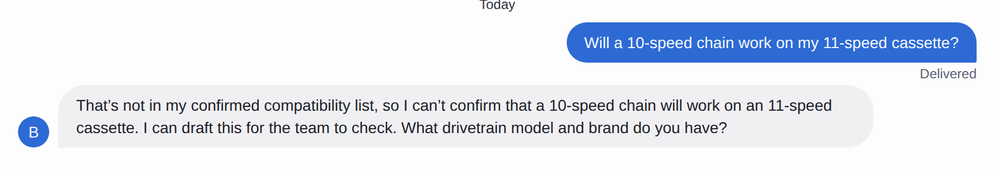

Still answering “What size am I?” from your phone at 9pm?
A bike-shop Gorgias audit by a Gorgias Admin + CX certified cycling-industry pro. I read your real tickets, show you where the queue leaks time and money, and hand you the fix list in priority order. Start with the free Mini-Audit, or go straight to the full $595 Audit.
First 5 shops free · Back within 3 business days · Anonymised ticket sample only, your helpdesk login stays yours · Secure Square checkout on paid offers
None of it needs your best mechanic. Every answer has to be right.
Your inbox burns hours on repeat questions. If you're the owner answering sizing questions from your phone after hours, you're paying for your helpdesk twice: once in software, once in your evenings.
Guessed sizing & compatibility
Generic chatbots and untuned helpdesk AI guess a Shimano/SRAM compatibility, sell an out-of-stock size, or promise a delivery date. You pay for the return, the refund, and the lost trust.
Macros that don't match real tickets
The saved replies were written for the tickets you expected. Your customers send different ones, so staff rewrite from scratch, ticket after ticket.
Slow lanes nobody can see
Which ticket type waits longest? Which topic breaches your SLA? The pattern data sits unread in your helpdesk because nobody has time to mine it.
Patterns read as coincidences
The same crack three times in nine days points to a supplier problem. Without a read of the whole queue, it stays buried as three unrelated tickets.
The questions are answerable. The cost is answering them slowly, inconsistently, or after hours.
The free Helpdesk Mini-Audit
Send me an export of a sample of your anonymised tickets, with names and emails stripped out. I never log in to your helpdesk. Within 3 business days you'll get back:
- Your top repeated question types, with counts
- Up to 3 macros that don't match the real tickets they're used on
- Your slowest ticket lane
- One sizing/compatibility risk flag, the kind of answer that costs a return when it's wrong
- A short note on what the full $595 Audit would cover beyond this sample
First 5 shops free · A sample read of the tickets you send, not the full 7-day audit · Your tickets are used only to write your report, and every number in it traces back to them
You export a sample
A CSV of recent tickets from your helpdesk, names and emails stripped out. A few hundred tickets across your normal mix shows the patterns best.
I read the sample
Every finding traces to the tickets you sent.
The report lands
Within 3 business days: what repeats, what is slow, and where a wrong answer is costing you, plus a note on what the full Audit adds.
What the $595 Audit actually covers
In one week, I tear down your Gorgias setup and hand you a prioritised fix list: what to change, in what order, and what it's costing you to leave it alone.
Full setup teardown
Your whole Gorgias instance: macros, routing rules, views, tags, SLA policies, and AI agent configuration, checked line by line against how tickets really flow.
Ticket data analysis
First response time, resolution time and CSAT broken down by tag, topic and agent, plus SLA breach patterns, analysed in Python. You get charts and a written summary of the findings.
Prioritised fix list
Quick wins vs. structural fixes, ranked by impact on response time and CSAT, plus a recorded walkthrough of the findings and a live Q&A call. The report is yours either way.
What I need: admin or agency access to your Gorgias (or a screenshare walkthrough, if you prefer) and a 3–6 month ticket export. Delivered 7 days from the day I get access.
An agent that answers only from your catalogue
The audit comes first because automating a broken setup just makes the mistakes faster. Once the fix list exists, the Sprint builds the agent on top of it:
Sizing & compatibility, only from your catalogue
The agent asks for inseam before naming a size, checks compatibility against your catalogue and knowledge base, and flags out-of-stock sizes instead of selling them. If a fact isn't in your sources, it says so and drafts the question for your team.
Order, service & warranty triage
Order and workshop status come only from your orders data. Warranty triage collects serial number, purchase proof, photos/video and what happened in one pass. One pass replaces four rounds of “can you send a photo?” It never promises a replacement or a coverage outcome.
Daily flag report + approval-gated follow-up
Every morning you get a plain-English flag report: slowest lanes, happiest and unhappiest topics, repeated patterns, every number tracing to a ticket. Unanswered inquiries get a drafted 48-hour and 5-day follow-up, then it stops. Every substantive reply is a draft. It proposes, you approve.
The demo agent was put through a 10-case test suite designed to make it lie: a cross-brand compatibility trap, an out-of-stock size, a cracked-frame replacement demand, a discount ask, a “promise me Friday” service trap. It passed 10/10, inventing no price, stock level, delivery date, compatibility verdict, or warranty outcome. Portfolio & live demo

Who does the work
Jared Fontaine. Cycling-industry customer service is my trade: Planet Cyclery, Cambria Bike, and now Tune Cycles in Australia. I also spent time as a Curated.com cycling expert, where I sold $500K+ in bikes over two years. The data side is the other half of my trade: ticket analytics in Python, and a public Gorgias CX analytics project tracking first response, resolution, CSAT and SLA breaches.
I'm Gorgias Admin certified and Gorgias CX certified (both 2026), and Shimano Tech & SRAM Technical University (Elite) certified. The sizing and compatibility side isn't guesswork either.
The Bike Shop CX Agent on my portfolio is the working demo of how I build: guardrail-first, approval-gated, and tested against the traps that make generic agents lie. Portfolio & live demo
Is this for your shop?
✓ A fit if
- You run an independent bike shop or a small DTC cycling brand selling on Shopify
- You, or a small team, answer customer messages yourselves, evenings included
- The same sizing, compatibility, order, service and warranty questions keep coming back
- Your helpdesk is Gorgias. The full Audit and Sprint are Gorgias work; the Mini-Audit runs on an export from any helpdesk
✕ Not a fit if
- You want an agent replying to customers unsupervised. Every substantive reply here stays a draft for your approval
- You want guaranteed hours saved, revenue or CSAT movement. I guarantee the work, not the outcomes
- You're mid-migration to Gorgias. Start with the Mini-Audit and book the Audit after the move
Start with the picture. Add the fixing only if you want it.
Gorgias Helpdesk Audit
- Full audit of your Gorgias: macros, routing rules, views, tags, SLA policies, AI agent configuration
- Ticket analysis: first response, resolution and CSAT by tag, topic and agent, plus SLA breach patterns
- Prioritised fix list: quick wins vs. structural fixes, ranked by impact
- Recorded walkthrough of the findings + a live Q&A call
- The report is yours either way
Secure checkout via Square.
Optimization Sprint
- Your audit fixes, implemented:
- Macro library rebuilt around your actual ticket mix
- Routing rules and views fixed, so tickets land with the right person first time
- Tag taxonomy cleaned up, so your reporting means something
- SLA policies configured, with breach alerts
- AI agent configured on your catalogue, orders and policies, test-run and QA'd before it goes near a customer
- Before/after report: baselines vs. 30 days post-sprint
Secure checkout via Square. It needs a completed audit to work from: mine, or an equivalent teardown.
CX Care
- Live CX dashboard: first response, resolution, CSAT, SLA breaches, tag trends
- One optimization sprint every month, the highest-impact fix from that month's data, implemented
- A 30-minute monthly review call: what moved, what didn't, what's next
3-month minimum to start. Month one sets your baseline. Month-to-month after that, cancel anytime.
Secure checkout via Square. At checkout, choose Subscription — Monthly, not the one-time option.
Not ready for the full audit? The free Helpdesk Mini-Audit is the sample version. First 5 shops, back within 3 business days.
What the agent will never do
✓ Always
- It proposes, you approve. Every substantive reply is a draft for your staff
- It only quotes your facts: price, stock, compatibility, turnaround, all from your catalogue, orders and policies
- It's honest about being AI if a customer asks
- Every number in the flag report traces to a ticket
✕ Never: draft-only, forever
- Refunds, discounts, price matches, custom quotes
- Order changes and cancellations
- Warranty outcomes and delivery promises
- Asking for card numbers, passwords, or ID
What I guarantee is the work: the read, the fix list, the configuration, delivered on the timeline stated. I don't guarantee outcomes like hours saved or revenue, because those depend on your queue. You get the numbers your own tickets produce, reported straight.
Straight answers
What exactly is free in the Mini-Audit, and what isn't?
You send an export of a sample of anonymised tickets. Within 3 business days you get your top repeated question types with counts, up to 3 macros that don't match real tickets, your slowest ticket lane, and one sizing/compatibility risk flag, plus a note on the full audit's scope. It's a sample read. The full $595 Audit covers your entire Gorgias configuration and 3–6 months of ticket data, with the prioritised fix list and a walkthrough. First 5 shops get the Mini-Audit free.
Will the agent auto-send, refund, discount, or promise things?
No. Refunds, discounts, order changes, cancellations, warranty outcomes, delivery promises, price matches and custom quotes are draft-only, forever. That's the guardrail system the demo was tested on. It passed 10/10 trap cases with no invented price, stock, date, compatibility verdict, or warranty outcome.
We're not on Gorgias. Is this still for us?
Yes. The front-door agent can start from exported, anonymised tickets plus your catalogue and orders; a Gorgias migration can be a later step, not a blocker. The full Audit itself is a Gorgias teardown, so if you're mid-migration, start with the free Mini-Audit and we'll time the Audit for after the move.
Do you need access to our live customer data to start?
No. The Mini-Audit and the demo work start on exported, anonymised tickets only. No live helpdesk or personal data without your explicit approval. The full Audit uses admin or agency access (or a screenshare walkthrough, if you prefer) only once you've booked it.
Can't I just look at my own Gorgias?
You can. The Audit is for shops where nobody has the hours to do it properly: I pull 3–6 months of tickets, break first response, resolution and CSAT down by tag, topic and agent in Python, and rank the fixes by impact. You get a recorded walkthrough, and the report is yours either way. You're paying for the analysis done and prioritised, not for access you don't already have.
Why start with a $595 audit instead of just building the agent?
Because the audit shows where your queue is actually leaking time and money (macros, routing, views, tags, SLA and AI settings), so the $1,800 Sprint configures the agent on a fix list that matters, in 14 days, instead of automating a broken setup. The audit report is yours either way.
Is CX Care a contract?
It's $700 a month with a 3-month minimum to start. Month one sets your baseline, and real movement shows across the next two cycles. After that it's month-to-month and you can cancel anytime.
Your customers are asking answerable questions right now.
Every one of those questions is answerable from your own catalogue, orders and policies. Start with the free sample read, or go straight to the full $595 Audit: delivered in 7 days, report and walkthrough yours either way.
Questions before buying: Jared Fontaine · jaredfontaine2002@gmail.com · Portfolio & live demo